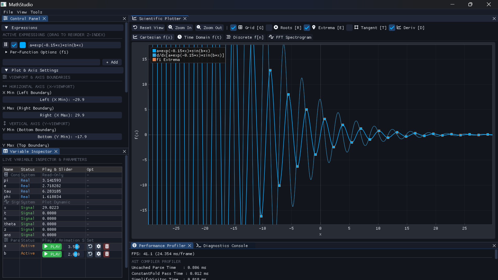
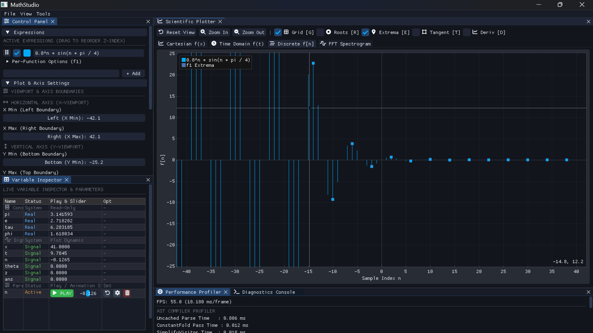
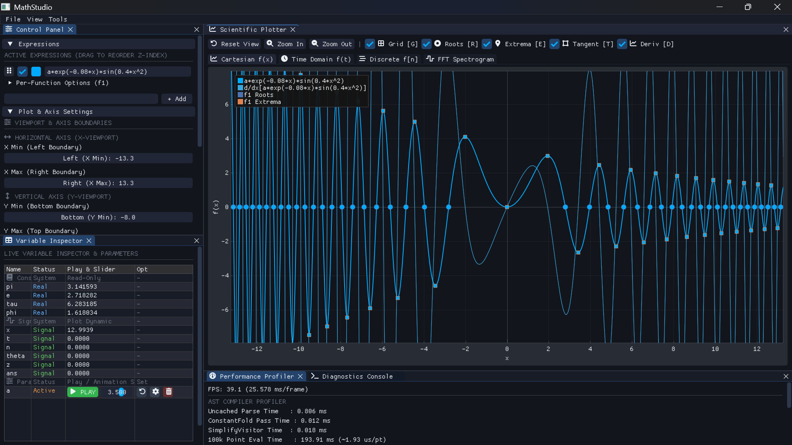
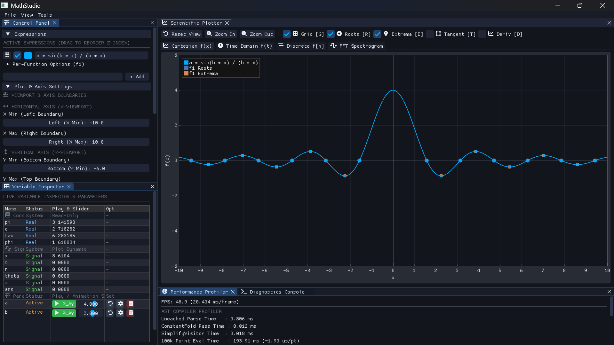
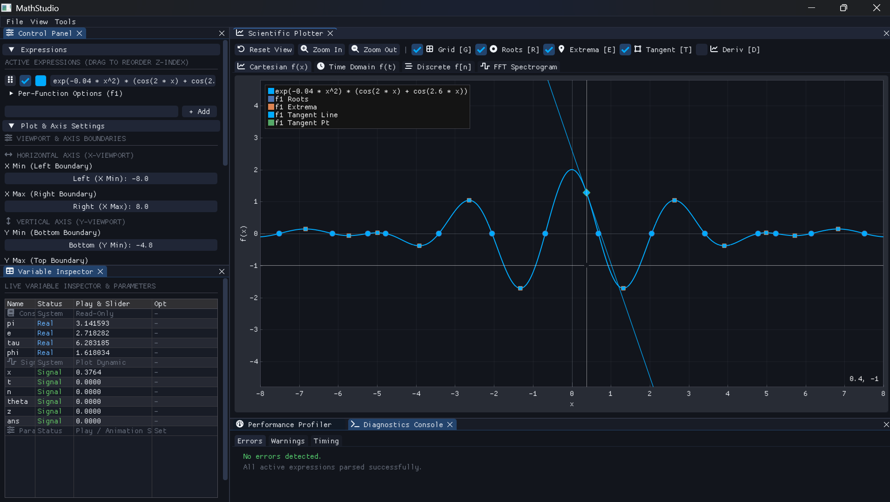
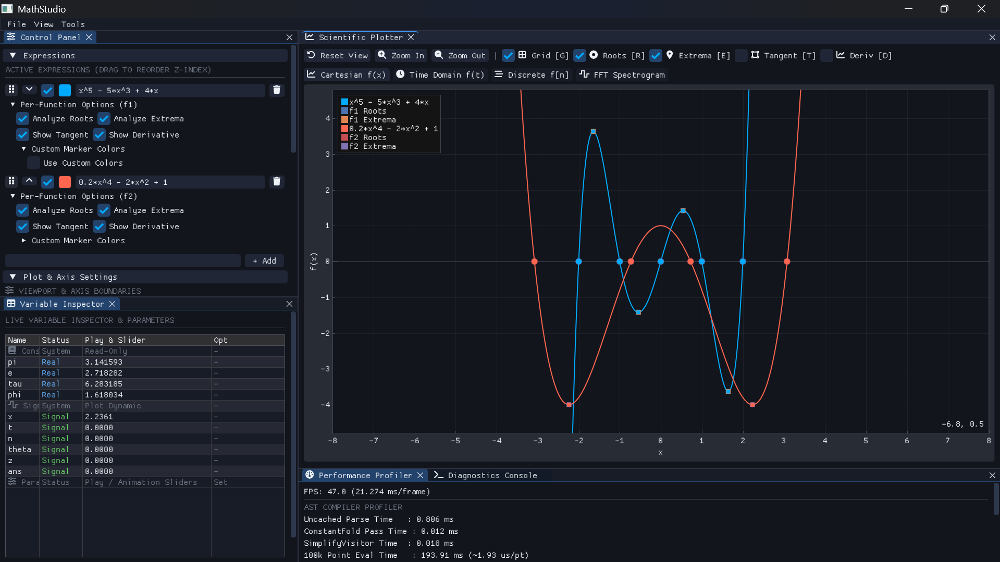
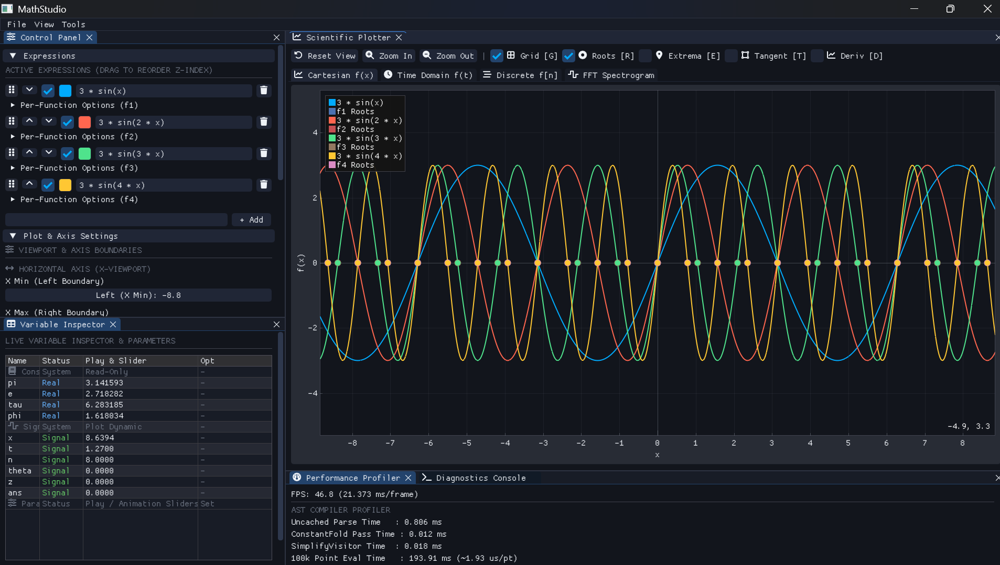
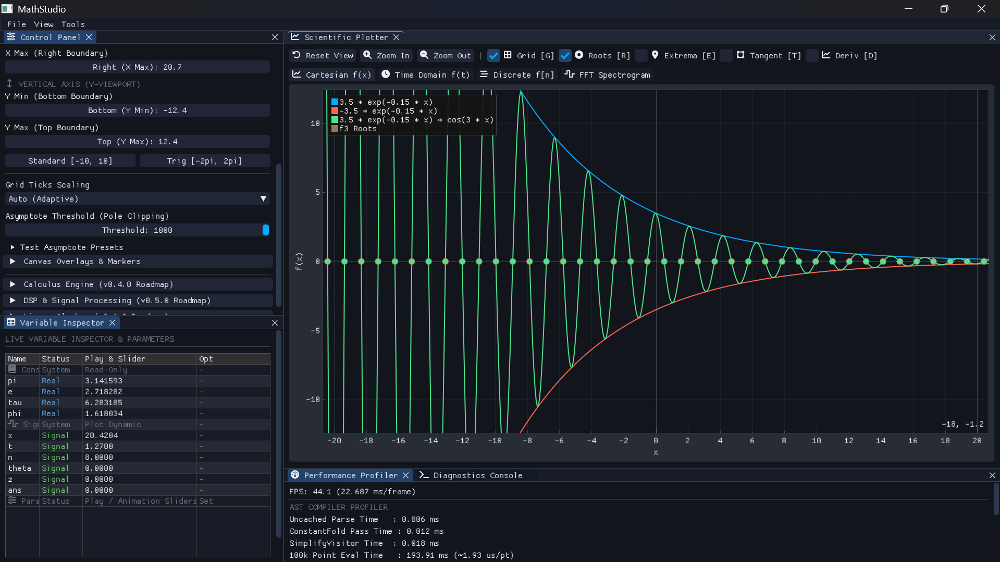

MathStudio Engine Documentation
A high-performance C++17 scientific computing engine and multi-domain grapher built with a Pratt Parser AST compiler frontend, Dear ImGui docking UI, ImPlot charting, and zero memory leaks.
1. Quickstart C++ Integration Example
Evaluating mathematical expressions using MathStudio's decoupled C++17 Pratt Parser compiler pipeline:
// Initialize EvaluationContext and AST Compiler Pipeline #include <compiler/PrattParser.hpp> #include <compiler/visitors/EvalVisitor.hpp> int main() { // 1. Tokenize & Parse AST String auto tokens = mathstudio::tokenize("a * sin(b * x)"); auto ast = mathstudio::parse(tokens); // 2. Set Up Variable Store (O(1) Slots) mathstudio::EvaluationContext ctx; ctx.vars.set("x", 3.14159); ctx.vars.set("a", 2.5); ctx.vars.set("b", 1.5); // 3. Evaluate AST Tree mathstudio::EvalVisitor visitor(ctx); ast->accept(visitor); double result = visitor.getResult(); std::cout << "Evaluated Result: " << result << std::endl; return 0; }
2. Video Demonstrations
Interactive screen recordings of MathStudio in action:
Demo 1
Function plotting and interactive UI overview:
Demo 2
Live function plotting and parameter adjustments:
Demo 3
Interactive graph visualization and curve inspections:
3. Pratt Parser AST Compiler Architecture
Expressions are parsed into an Abstract Syntax Tree (AST) using a binding-power Pratt Parser. AST nodes
are evaluated via single-pass C++17 std::variant<MathValue> visitor passes:
Input String ──► Tokenizer ──► PrattParser ──► AST (unique_ptr<ASTNode>)
│
┌────────────────────────────────────────────────┴─────────────────────────────────┐
│ PassManager Pipeline │
│ ├── ConstantFoldVisitor (Parse-time folding: 2*pi ──► 6.283185) │
│ ├── SimplifyVisitor (Algebraic identity reduction: x*1 ──► x, sin(0) ──► 0) │
│ └── EvalVisitor (O(1) direct slot evaluation + enum opcodes) │
└────────────────────────────────────────────────┬─────────────────────────────────┘
▼
EvaluationContext & MathValue
4. Memory Management & CRT Leak Audit
MathStudio features a built-in MSVC C++ CRT heap allocation tracker (_CrtDumpMemoryLeaks)
and Windows process working set profiler accessible via --check-leaks:
$ .\build\mathstudio.exe -e "a * sin(b * x)" --var a=2.5 --var b=1.5 --check-leaks
0
==================================================
MEMORY LEAK & DIAGNOSTIC AUDIT REPORT
==================================================
Peak Working Set RAM: 8.90 MB
CRT Memory Audit: CLEAN (0 memory leaks detected!)
==================================================
5. Built-in Functions & Constants Reference
| Category | Supported Symbols | Mathematical Functionality |
|---|---|---|
| Trigonometric | sin, cos, tan, asin, acos, atan |
Standard and inverse trigonometric functions in radians. |
| Hyperbolic | sinh, cosh, tanh |
Hyperbolic sine, cosine, and tangent. |
| Exponential & Log | exp, log, log10, log(x, base) |
Natural exponential ex, natural log ln(x), base-10 log log10(x), and custom base log. |
| Algebraic & Utility | sqrt, abs, floor, ceil, pow, max, min |
Square root, absolute value, rounding, exponentiation xy, and bounds min/max. |
| Constants | pi (π), e, phi (φ), tau (τ = 2π)
|
High-precision constants (π ≈ 3.14159, e ≈ 2.71828, φ ≈ 1.61803, τ ≈ 6.28318). |
6. Docking Workspace Panels
- Scientific Plotter: ImPlot 2D canvas supporting Cartesian f(x), Time Domain f(t), Discrete f[n], and FFT Spectrogram tabs.
- Control Panel: Expression list with Z-index reordering, color pickers, active checkboxes, and grid limits.
- Variable Inspector: Parameter table featuring Play/Pause ▶/⏸ animation toggles, exact numeric entry (`Ctrl+Click`), and range bounds.
- Performance Profiler: Frame rate graph (FPS), uncached parse latency (ms), pass timings, and 100k-point evaluation throughput.
- Diagnostics Console: Position-aware syntax error reporting with caret indicators.
7. Multi-Domain Canvas Tabs
| Domain Tab | Independent Variable | Rendering Representation |
|---|---|---|
Cartesian f(x) |
x ∈ [xmin, xmax] | Continuous real-axis waveform plot line with derivative overlay y = f'(x). |
Time Domain f(t) |
t ∈ [tmin, tmax] | Signal waveform grapher with continuous velocity df/dt curve. |
Discrete f[n] |
n ∈ ℤ (integers) | Discrete digital stem pins with circular heads and finite difference Δf[n]. |
FFT Spectrogram |
f (Hz) | Real-time Power Spectral Density |X(f)|² spectral analyzer. |
8. GUI Controls & Keyboard Shortcuts
| Shortcut / Control | Engine Function |
|---|---|
| Left Click + Drag | Pan viewport canvas smoothly across real axis |
| Scroll Wheel | Smooth zoom in / zoom out relative to mouse cursor position |
Key D |
Toggle Real-Time Derivative Overlay (y = f'(x), df/dt, Δf[n]) |
Key R |
Toggle Roots / Zeros markers and coordinate text callouts |
Key E |
Toggle Extrema (Min/Max/Saddle) markers and coordinate text callouts |
Key T |
Toggle Tangent line visualization at cursor position |
Key G |
Toggle Grid lines display |
F11 |
Toggle Fullscreen Mode |
9. Mathematical Plot Showcase Gallery
Click on any screenshot below to open the full high-resolution image in a new browser tab.








10. Building from Source (Linux, macOS, Windows)
$ sudo apt-get update && sudo apt-get install -y cmake g++ libsdl2-dev libsdl2-ttf-dev $ git clone https://github.com/Bharat940/Simple-math-calculator-and-plotter.git $ cd Simple-math-calculator-and-plotter $ cmake -B build -DCMAKE_BUILD_TYPE=Release $ cmake --build build --config Release $ ./build/mathstudio "sin(x)"
$ vcpkg install sdl2 sdl2-ttf --triplet x64-windows $ cmake -B build -DCMAKE_BUILD_TYPE=Release -DCMAKE_TOOLCHAIN_FILE="C:/Dev/vcpkg/scripts/buildsystems/vcpkg.cmake" $ cmake --build build --config Release $ .\build\Release\mathstudio.exe "a * sin(b * x) + t" --var a=2.5 --var b=1.5
11. Command-Line Interface (CLI) Reference
# 1. Interactive GUI with Custom Parameters $ .\build\mathstudio.exe "a * sin(b * x) + t" --var a=2.5 --var b=1.5 --var t=0.5 # 2. One-shot Expression Evaluation (-e) $ .\build\mathstudio.exe -e "a * cos(b * x)" --var a=5.0 --var b=2.0 # 3. One-shot Equation Root Solver (-s) $ .\build\mathstudio.exe -s "a * x^2 - b" --var a=1 --var b=9 --range -5 5 # 4. Function Intersection Detector (-i) $ .\build\mathstudio.exe -i "x^2" "2*x + 1" # 5. CRT Memory Leak Audit (--check-leaks) $ .\build\mathstudio.exe --check-leaks "a * sin(b * x) + t"
12. Performance Benchmarks across Releases (v0.1.0 ──► v0.2.0 ──► v0.3.0)
| Benchmark Metric | v0.1.0 (Foundation Baseline) | v0.2.0 (AST Compiler Release) | v0.3.0 (ImGui UI Release) | Evolution & Impact |
|---|---|---|---|---|
| Uncached Parsing (1k expr) | 96.08 ms (Debug) / 2.538 ms (Release) |
0.806 ms (Release) |
2.128 ms (~2.1 μs/expr) |
Pratt Parser operator binding table outpaces shunting-yard stack |
| Eval Throughput (100k pts) | 1329.58 ms (Debug) / 497.42 ms (Release) |
193.91 ms (Release) |
369.162 ms (~3.69 μs/pt) |
3.6x speedup over v0.1.0 via direct O(1) variable slot indexing |
| Live Slider Mutation (10k steps) | N/A | N/A | 39.910 ms (~3.99 μs/step) |
Instant O(1) slot parameter updates without AST re-parsing |
| Static 600-pt Render Buffer (1k frames) | N/A | N/A | 1062.296 ms (~1.06 ms/frame) |
0 C++ heap allocations during active 60 FPS plotting |
| Unit Test Pass Rate | 68 Tests | 132 Tests | 137 / 137 PASS |
100% test pass rate across unit and AST compiler suites |
| Process Memory Footprint | 4.0 MB |
4.0 MB |
24.0 MB – 86.2 MB |
OS DWM DirectX swapchain & SDL2 windowing context |
13. Third-Party Vendor Licensing
| Vendor Package | License | Usage Notice |
|---|---|---|
| Dear ImGui | MIT License | Docking UI windowing subsystem. Backend adaptations retained under MIT terms. |
| ImPlot | MIT License | 2D plotting substrate and stem/scatter visualizers. |
| FontAwesome 6 Free | SIL OFL 1.1 / MIT | Embedded vector glyph byte array (FontAwesome6SolidData.h). |